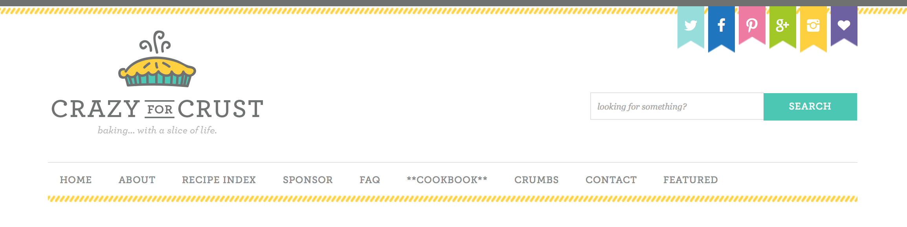

Header
This is an image from a cooking and recipe website. The social media banner at the top immediately grabs the user's attention by using colors that make you feel:
- light blue - peaceful, calm
- bright blue - happy, energetic
- bright pink - happy, fun, energetic
- bright green - trendy, lively
- yellow - cheerful, friendly
- purple - sweet tasting, nostalgic
